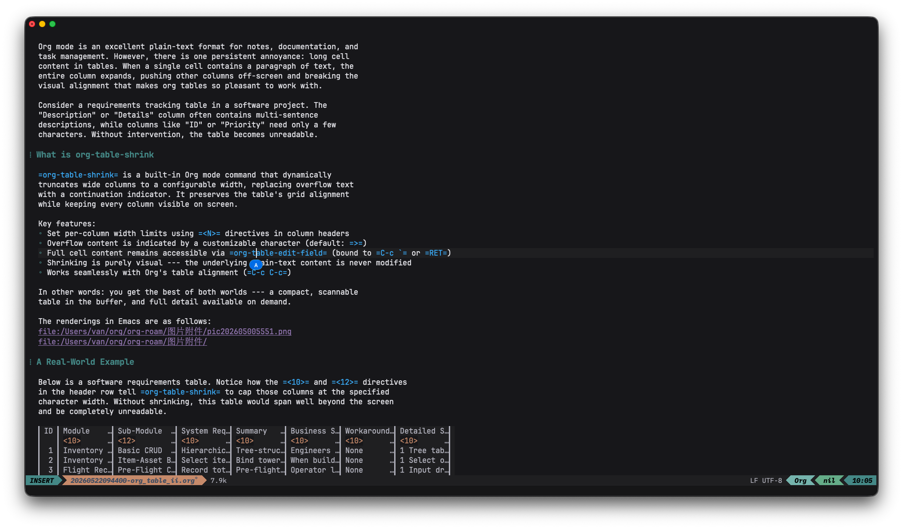

Org Table Shrink
org-table-shrink is a small but high-impact feature that solves the long-standing problem of wide tables in Org mode.
The Problem: Wide Tables in Org Mode
Org mode is an excellent plain-text format for notes, documentation, and task management. However, there is one persistent annoyance: long cell content in tables. When a single cell contains a paragraph of text, the entire column expands, pushing other columns off-screen and breaking the visual alignment that makes org tables so pleasant to work with.
Consider a requirements tracking table in a software project. The “Description” or “Details” column often contains multi-sentence descriptions, while columns like “ID” or “Priority” need only a few characters. Without intervention, the table becomes unreadable.
What is org-table-shrink
org-table-shrink is a built-in Org mode command that dynamically truncates wide columns to a configurable width, replacing overflow text with a continuation indicator. It preserves the table’s grid alignment while keeping every column visible on screen.
Key features:
- Set per-column width limits using
<N>directives in column headers - Overflow content is indicated by a customizable character (default:
>) - Full cell content remains accessible via
org-table-edit-field(bound toC-c `orRET) - Shrinking is purely visual — the underlying plain-text content is never modified
- Works seamlessly with Org’s table alignment (
C-c C-c)
In other words: you get the best of both worlds — a compact, scannable table in the buffer, and full detail available on demand.
The renderings in Emacs are as follows:

A Real-World Example
Below is a software requirements table. Notice how the <10> and <12> directives in the header row tell org-table-shrink to cap those columns at the specified character width. Without shrinking, this table would span well beyond the screen and be completely unreadable.
| ID | Module | Sub-Module | System Requirements | Summary | Business Scenario | Workaround | Detailed Specification |
| 1 | Inventory Mgmt | Basic CRUD | Hierarchical item tree with fields: name, code, type, parent; Excel import/export; cascade-delete confirmation for parent items. |
Tree-structured inventory entry and maintenance | Engineers need a standard parts library with parent-child relationships (e.g., Tower → Body → Crossarm) | None | 1 Tree table with add, edit, delete for item nodes; 2 Drag-and-drop reordering; 3 Bulk import from spreadsheet. |
| 2 | Inventory Mgmt | Item-Asset Binding | Select items from BOM tree and assign to an asset; set planned quantity and unit weight (kg) per item; auto-calculate total weight per material. |
Bind tower assets to BOM items, generate a planned checklist | When building “Line 20 Tower”, operators pick required materials (crossarms, insulators) from the library | None | 1 Select or create a tower asset; 2 Auto-compute total weight = planned_qty × unit_weight; 3 Save and export the BOM checklist. |
| 3 | Flight Records | Pre-Flight Capture | Record total drone weight including payload; associate tower and material list; set planned round-trip count; auto-log flight time (s) and GPS trajectory. |
Pre-flight weight identification and flight logging | Operator logs the drone’s total weight before each lift mission and prepares for time/track recording | None | 1 Input drone total weight (kg) before takeoff; 2 Set planned round trips without landing; 3 Real-time GPS logging during flight. |
| 4 | Flight Records | Handheld Execution | Handheld controller displays tower’s planned material list; pilot selects material and enters lifted quantity; one-tap confirmation after flight; system auto-accumulates “lifted qty”. |
On-site handheld task execution and quantity tracking | Pilots at the field site use a handheld controller to quickly log how many items were actually lifted | None | 1 Handheld UI supports tower selection; 2 Real-time progress: lifted / planned per material; 3 Offline-capable sync. |
| 5 | Flight Records | Detailed Logging | Each lift generates a record with: timestamp, tower ID, material, type, quantity, start/end coordinates, round-trip time, trajectory file, operator; filter by tower, material, date range. |
Detailed lift-by-lift logging and progress monitoring | Managers need historical lift details per tower and per material for progress supervision and statistics | None | 1 Generate a detailed record per lift with timestamps and positions; 2 Export progress reports as PDF/Excel; 3 Dashboard with completion rates. |
How It Works
Under the hood, org-table-shrink uses overlays — Emacs’ mechanism for display-only text properties — to hide the portion of each cell that exceeds the specified width. The original text is never altered; it remains in the buffer exactly as you typed it.
When you need to see or edit the full content of a cell, you can:
- Press
RET(orC-c `) to openorg-table-edit-field, a dedicated minibuffer for editing the current cell - Toggle shrinking off temporarily to see the raw table
The org-table-shrunk-column-indicator variable controls what character appears at the truncation point. The default is >, but you can set it to anything you prefer — for example, … or ↓.
How to wrap lines in html
When exporting to HTML, you can insert line breaks inside table cells using Org’s inline export syntax @@html:<br/>@@. This is processed only during HTML export — the raw @@html:<br/>@@ text is invisible in other output formats (LaTeX, ODT, plain text). It is a clean way to control cell-internal line wrapping in the exported HTML without affecting the table’s structure or other export backends.
Org Mode Configuration
Here is the configuration I use with Doom Emacs and Evil bindings:
;; Uncomment to customize the overflow indicator:
;; (setq org-table-shrunk-column-indicator "…")
;; Press RET to edit the current cell's full content in a minibuffer
(map! :after org
:map evil-org-mode-map
:n "RET" #'org-table-edit-field)
;; Auto-shrink tables after every realignment (C-c C-c)
(advice-add 'org-ctrl-c-ctrl-c :after
(lambda (&rest _)
(when (org-at-table-p)
(org-table-shrink))))
With this setup, every time you press C-c C-c to realign a table — which you probably do frequently — org-table-shrink runs automatically, keeping your tables compact and readable.
Conclusion
org-table-shrink is a small but high-impact feature that solves the long-standing problem of wide tables in Org mode. If you maintain requirements documents, meeting notes, or any kind of structured data in org tables, it is well worth the five minutes it takes to configure. Your future self, squinting at a 300-character-wide table row, will thank you.
That said, the real value of org-table-shrink is during editing and review, where screen real estate matters most. Combined with the auto-shrink advice shown above, it becomes entirely transparent — tables just work, and you don’t have to think about it.